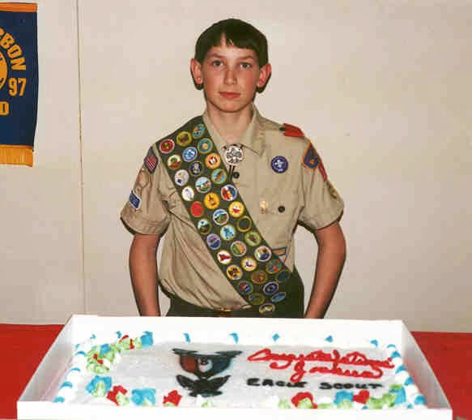

From Pennsylvania pines to Colorado peaks.

I grew up in rural Pennsylvania surrounded by pine trees, cold creeks, and white-tailed deer. Hunting with my dad, fishing before sunrise, camping under stars that you could actually see. I earned my Eagle Scout before I turned 18 — an experience that taught me self-reliance, service, and a deep respect for the natural world that still drives everything I build.
MIT sharpened my mind. I studied Materials Science & Engineering, got pulled into the Institute for Soldier Nanotechnologies, co-founded my first company (Hemetrics, a biomedical diagnostics startup), and won the $1K Warmup Competition. I learned that the best way to understand something is to try to build it.
California ignited my ambition. I chased concentrated solar at Amonix in Seal Beach — world-record CPV modules deployed across the American Southwest. Then electric vehicles at Evercar, putting Nissan Leafs into the hands of rideshare drivers across LA. Then autonomous delivery at Nuro, where I was one of the earliest operations hires helping scale from a founding team to a real company.
Colorado became home. Rachael, Scout, and I put down roots in Boulder at the foot of the Rockies. I co-founded Elephant Energy to electrify everything — heat pumps, induction stoves, EV chargers — and spent five years building the team and technology that made it the easiest way to get off fossil fuels. Now I'm building again.
Across all of it, one thread connects everything: using technology to accelerate the energy transition and make the built environment smarter, cleaner, and more resilient. And wearing camo while doing it.
